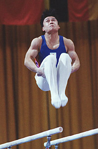

Hikaru Tanaka (JPN)
1995 World PB Bronze Medalist

Medal Total
World Championships: 1 Silver, 1 Bronze
Hikaru was born on July 19, 1972, in Wakayama. He was coached by Hikorori Yamaguchi. Tanaka is a graduate of the University of Tsukuba and is a businessman in Tokyo.
Competition Results
1989
Intl. Junior Championships: 1st AA, 1st HB, 3rd PH, 3rd R
1990
Tokyo Cup: 1st PH, 5th PB
1991
DTB Cup: 9th AA, 6th PB
Gander Memorial: 12th AA
JPN Championships: 3rd AA, 1st PB, 2nd HB, 3rd FX
NHK Cup: 6th AA
Swiss Cup: 9th Team
Tokyo Cup: 1st PB, 2nd PH
1992
Chunichi Cup: 4th AA, 1st PB, 2nd PH, 3rd V
JPN Championships: 7th AA, 1st PH, 1st PB, 1st HB
NHK Cup: 10th AA
Tokyo Cup: 8th PH
World Championships: 5th PH, 16 V (semis)
1993
Chunichi Cup: 8th AA, 4th HB, 5th FX, 6th V
East Asian Games: 4th AA, 4th FX, 4th V, 4th PB, 8th R
JPN Championships: 2nd AA, 1st PB
University Games: 21st AA
World Championships: 16th AA
1994
Asian Games: 3rd Team, 4th AA, 4th HB
JPN Championships: 1st AA, 1st PB, 3rd HB, 6th R
NHK Cup: 1st AA
World Championships (Brisbane): 11th AA
World Championships (Dortmund): 6th Team
1995
American Cup: 7th AA
Chunichi Cup: 3rd AA, 3rd FX, 3rd R, 3rd PB, 4th V, 6th PH
Intl. Mixed Pairs: 4th Team
JPN Championships: 20th AA, 1st PB
NHK Cup: 1st AA
University Games: 13th AA, 3rd R, 3rd HB, 5th PB, 6th PH, 6th V
World Championships: 2nd Team, 13th AA, 3rd PB, 5th PH, 7th
R
1996
Chunichi Cup: 8th AA
JPN Championships: 6th AA
NHK Cup: 2nd AA
Olympic Games: 10th Team, 19th AA
This page was created on September
11, 2005 and was last updated on November 19, 2005.
© Gymn Forum